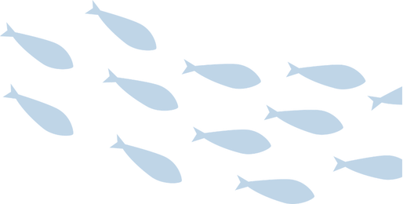
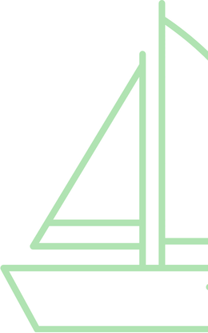
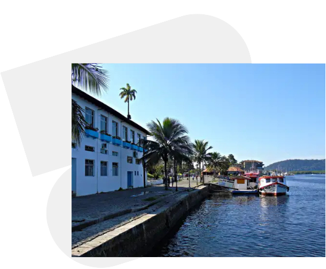
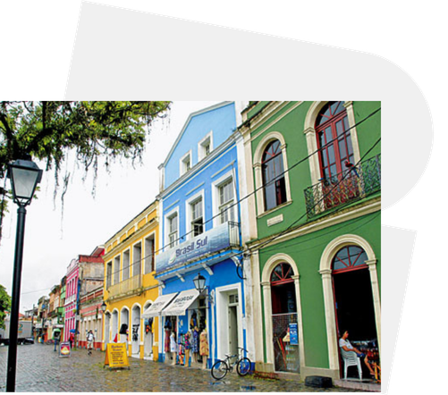

Restaurante Danúbio Azul - Rua Benjamin Constant
Paranaguá, com aproximadamente 166.428 mil habitantes, é conhecida como a cidade berço do Paraná, onde a história do estado começou de verdade. Mas não é apenas isso; é o lugar onde pulsa tradições de 378 anos.
Aqui, a hospitalidade caiçara transborda gerações, acolhendo o visitante com o calor de uma terra que mantém sempre o orgulho de suas raízes.

Casario Histórico - Rua da Praia
Mapa Cultural de Paranaguá
Navegue pelo mapa real e clique nos marcadores azuis para explorar os pontos históricos.
No nosso programa, apresentamos um pouco da cultura do município, convidando você a mergulhar no que compõe a identidade única de Paranaguá.